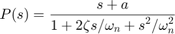
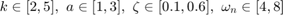
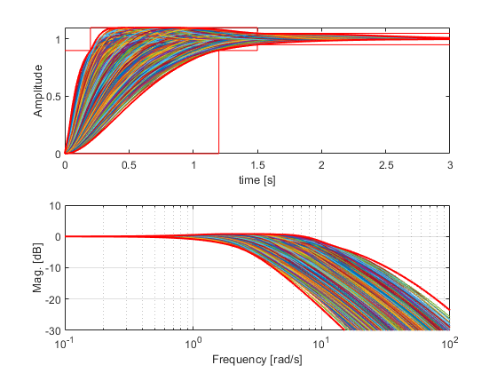
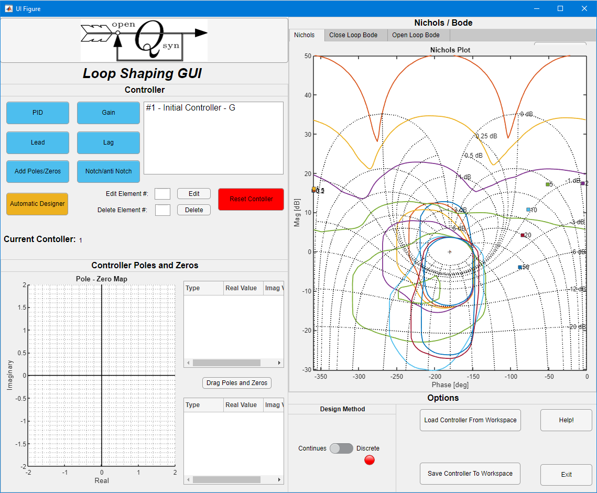

Design using the Qsyn GUI
The design stage could become a tedious task, involving many iteration. To aid this task, Open Qsyn offers a Graphical User Interface (GUI). We explore this option using the Basic SISO Exmaple. The plant is given as

with uncertain paraetmers given as

We model the uncertain plant as a Real Factored Form (RFF) qplant element and compute some templates (see also RFF template computation example).
k=qpar('k',2,2,5,8); % 1st uncertain parameter a=qpar('a',3,1,3,8); % 2nd uncertain parameter z=qpar('z',0.6,0.3,0.6,8); % 3rd uncertain parameter wn=qpar('wn',4,4,8,8); % 4th uncertain parameter num = [qrff('hf',a) qrff('gain',k)]; % numinator in RFF form den = qrff('dc',wn,z); % denomirator in RFF form P = qplant(num,den); % plant w = [0.2 0.5 1 2 5 10 20 50]; % tepmlate frequencies P.cnom; % compute nominal response P.ctpl('rff',w,'accuracy',[1 1]); % compute templates
Calculating templates using the Real Factored Form method --> for w=0.2 [rad/sec] --> for w=0.5 [rad/sec] ...
We use the following 6dB sensitivity specs and servo specs and compute bounds
spec1 = qspc('odsrs',w,6); % sensitivity spec spec2 = qspc.rsrs([1.2 0.2],10,1.5,[],logspace(-1,2),2.85,3.1); % servo spec des = qdesign(P,[spec1 spec2]); % create qdesign object des.cbnd('odsrs') des.cbnd('rsrs')
Creating array of size 4x6000 Reducing to 4x2916 Reducing to 4x2286 ...
At this point we can launch the GUI. This is done using the qdesign.gui method. In our case, that is
des.gui();
The above command starts the GUI with an initial controller G(s)=1. In case the user wishes to use a different initial contoller G the call becomes des.gui(G).
